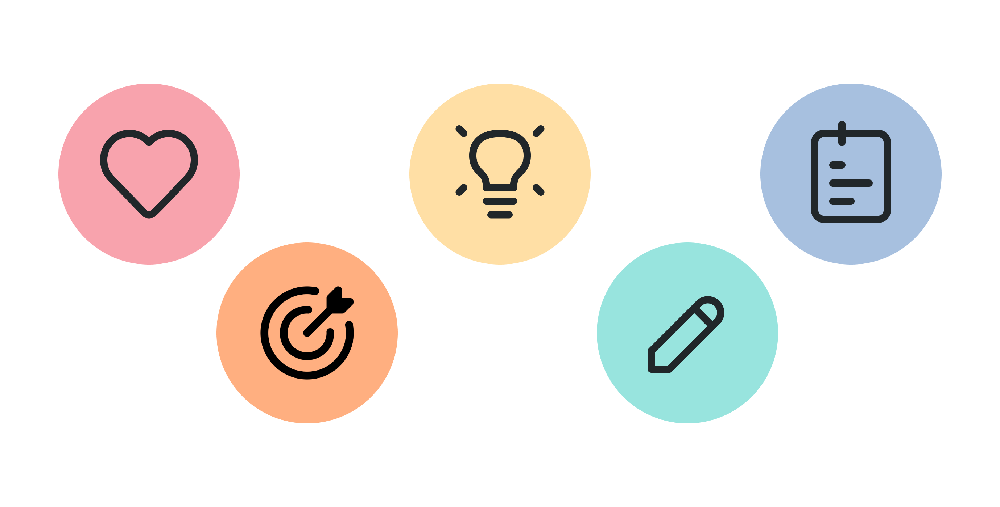
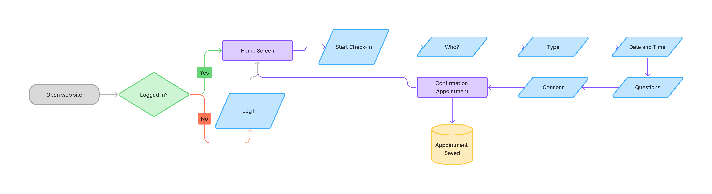
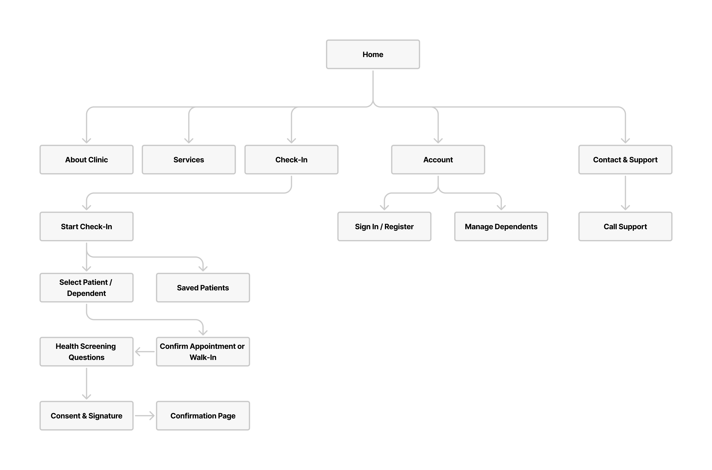
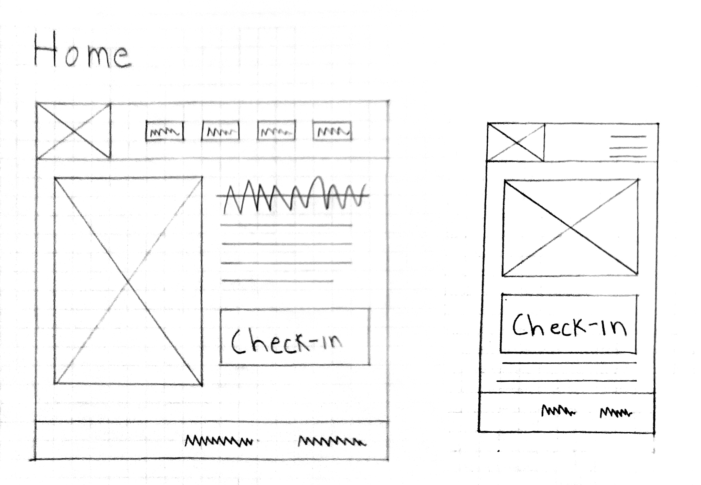

DocGo
Web/Mobile UX Design
My Contributions
Role: UX Lead
Project Overview
DocGo is a digital check-in and appointment management application designed specifically for a family medical practice.
Project Goal
To design an intuitive, secure, and efficient mobile-friendly check-in experience for a family medical clinic
Process
We followed the Design Thinking process starting with user interviews to understand real frustrations with clinic check-ins. Then, we defined key problems and mapped user needs. After brainstorming ideas, we created wireframes and tested them with users. Their feedback helped us simplify the experience, add key features like dependent check-in, and improve the overall flow.
Research
To ensure our solution truly addressed patient and clinic needs, we grounded our design process in user-centered research. We used a mix of qualitative methods to gather insights from real users and stakeholders. Each method provided critical input that directly shaped key aspects of our app.
User Interviews
To gather rich, qualitative insights on how real people currently manage plant care and what frustrates or delights them we conducted a first round of user interviews these were the key findings:
Empathy Map
We synthesized interview data into empathy maps for three user personas: Amanda (busy working mom), Sarah (caregiver/mother), and Luis (retired patient with low tech proficiency). To better understand users’ thoughts, feelings, and behaviors around medical visits.


Design
Following our research phase, we transitioned into design with a clear goal: create an intuitive, inclusive, and efficient check-in experience grounded in real user needs. Every decision we made was guided by insights from user interviews, usability feedback, and behavioral observations.
User Flow
Our user flows mapped out users type journey whether checking in for themselves, managing dependents, or completing health screenings.
Prioritization
Using a MoSCoW method (Must-have, Should-have, Could-have, Won’t have), we prioritized the most valuable features.
Site Map
We built a clear sitemap based on our user needs and flows, keeping navigation simple and familiar. Users valued clarity and expected a straightforward layout. The sitemap influenced the visual hierarchy of the interface and made room for context-rich pages like “About Clinic” and “Services.”
Paper wireframes
Paper wireframes were used early. Low-fidelity testing let us gather quick feedback without investing time in detailed visuals. Helped identify redundant steps early on,
Digital Wireframes
After creating our paper wireframes, I created digital wireframes to visualize the structure of the app. These wireframes helped define key screens, such as the Home, Check-In Flow, Appointment Selection, and Account Management.
Prototype and usability test
In our first iteration, we turned the digital wireframes into a basic clickable Figma prototype and used it to conduct our initial round of usability testing.
Usability Insights
To evaluate usability, I conducted a moderated usability test with participants that reflected our key user personas, including parents, caregivers, and older adults. During the test, users completed tasks such as checking in themselves or a dependent, answering screening questions, and reviewing their confirmation. The feedback revealed that users appreciated the step-by-step guidance and clear progress indicators, while some requested more detailed descriptions under service options. Others expected to see previous appointments during the process, and many expressed a strong preference for receiving confirmation details via email. These insights led to design improvements such as clarifying service descriptions, adding email confirmation functionality, and exploring persistent profiles with appointment history.

Iterations
Iterative design allowed us to made several iterations based on user feedback and testing insights. Each iteration helped align the design more closely with real user needs, enhancing both usability and user confidence.

Conclusion and Next Steps
Designing DocGo highlighted the value of grounding every design decision in real user needs. By applying the design thinking process from research to testing I learned how even small usability details can greatly impact user trust and satisfaction. It also reinforced the importance of designing for inclusivity, ensuring that busy parents, caregivers, and older adults all feel supported throughout the experience.